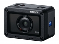

器材库 > 不可换镜头数码相机 > DSC-RX0

规格总览
发布日期
2017-08-31
厂家推荐价格
4,999.00 （人民币）
防水
是
影像规格
影像传感器
Exmor RS CMOS
影像传感器尺寸
1英寸
有效像素
1530万
静态图像格式
JPEG, RAW
静态图像尺寸
[3:2] 4800×3200 / 3408×2272 / 2400×1600 [16:9] 4800×2704 / 3408×1920 / 2400×1352 [4:3] 4272×3200 / 3024×2272 / 2128×1600 / VGA [1:1] 3200×3200 / 2272×2272 / 1600×1600
短片格式
MP4, AVCHD 2.0, XAVC S
短片尺寸
AVCHD: PS(1920×1080/50p) / FX(1920×1080/50i) / FH(1920×1080/50i) / FX(1920×1080/25p) / FH(1920×1080/25p) XAVC S HD: 1920×1080/50p / 1920×1080/25p / 1280×720/100p MP4: 1920×1080/50p / 1920×1080/25p / 1280×720/25p
镜头和对焦
镜头结构
6片/6组
非球面镜片
6片
焦距
7.7mm
等效35mm画幅焦距
24mm
最大光圈
f/4
最近对焦距离
50cm
自动对焦系统
对比检测自动对焦
对焦模式
手动对焦/单次AF/预设对焦
曝光控制
测光模式
点测光, 多重测光, 中心测光
曝光模式
程序自动/手动曝光/调出存储/动态影像（智能自动/程序自动/手动曝光）/高帧速率（程序自动/手动曝光）/智能自动/高级自动
快门速度
4 秒 - 1/32000 秒（电子快门）
曝光补偿
±3EV以1/3EV级调整
ISO感光度
自动（ISO 125 - 12800，可限定上下值），125 / 160 / 200 / 250 / 320 / 400 / 500 / 640 / 800 / 1000 / 1250 / 1600 / 2000 / 2500 / 3200 / 4000 / 5000 / 6400 / 8000 / 10000 / 12800（可扩展至 ISO 80/100）
白平衡
自动/日光/阴影/阴天/白炽灯/荧光灯（暖白色）/荧光灯（冷白色）/荧光灯（日光白色）/荧光灯（日光）/ 闪光灯 /（色温/滤光片）/自定义/自定义设置
自拍
关/10 秒/5 秒/2 秒/10 秒或5秒或2秒（连拍3或5张）/10 秒或5秒或2秒阶段拍摄
连拍
每秒16张
拍摄模式
单张拍摄/连拍/自拍定时/自拍定时(连拍)/连续阶段曝光/单拍阶段曝光/白平衡阶段曝光/DRO阶段曝光
取景规格
LCD尺寸
1.5英寸
LCD像素
23万
亮度调节级数
手动（5档）/ 晴朗天气
文件输入/输出
存储卡
MS/MS PRO记忆棒, microSD, microSDXC
数据接口
高速USB
视频/音频接口
Micro HDMI 接口
无线功能
Wi-Fi, 蓝牙
配件端口
麦克风输入端子
电源
电池
NP-BJ1（附带）
续航能力
[静态影像] 约 240张 / 约120分钟 [实际动态影像] 约35分钟（CIPA标准） [连续动态影像] 约60分钟（CIPA标准）
外观
颜色
黑色
尺寸
59×40.5×29.8mm
重量
仅机身约95g / 含电池和记忆棒约110g
其它
附件
可充电电池套装 NP-BJ1，交流适配器AC-UUD12，Micro USB 连接线，腕带，存储卡保护器，使用说明书,保修卡
备注
具备10米防水、2米防震和200kgf/2000N防撞的三防功能
该产品暂无存档的网友点评
产品图 / 样片
DSC-RX0
评测 / 相关文章
- 详细内容 （存档）
- 索尼黑卡迷你 RX0 体验评测 （存档）
- 我猜你没用过这么小的相机 RX0快速上手简评 （存档）
- ［试用］索尼黑卡迷你RX0实拍图赏 （存档）
- ［资讯］索尼黑卡RX0、RX10Ⅳ新品点评 （存档）
- ［资讯］索尼黑卡RX0/RX10IV新品发布会专访 （存档）
相关文章
- ［试用］索尼黑卡迷你 RX0 体验评测 （存档）
- ［试用］索尼黑卡迷你RX0实拍图赏 （存档）
- ［试用］RX0快速上手简评 （存档）
- ［资讯］索尼黑卡RX0、RX10Ⅳ新品点评 （存档）
- ［资讯］索尼黑卡RX0/RX10IV新品发布会专访 （存档）
- ［资讯］让拍摄更自由 索尼发布迷你黑卡RX0 （存档）
- ［资讯］索尼发布黑卡RX0的快门连接线 （原站已下线）
- ［资讯］索尼发布RX0控制模块CCB-WD1 （原站已下线）